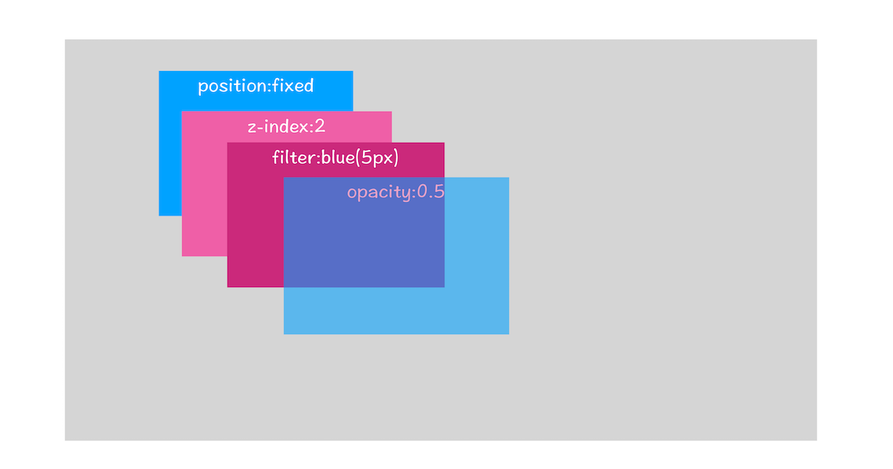

浏览器渲染进程分析
浏览器的渲染进程非常重要，不仅是因为Chrome的Blink和V8都是运行在该进程中，更重要的是只有掌握了该进程的知识，你才可以解决一系列相关的问题，比如能熟练使用开发者工具，因为能够理解开发者工具里面大部分项目的含义，能优化页面卡顿问题，使用JavaScript优化动画流程，通过优化样式表来防止强制同步布局，等等。
基础概念
所以，我们编写的HTML，CSS和JavaScript是如何通过浏览器显示成功能丰富，页面美观的前端页面呢？
从图中可以看出，左边输入的是HTML、CSS、JavaScript数据，这些数据经过中间渲染模块的处理，最终输出为屏幕上的像素。
为了能更好地理解下文，你可以先结合下图快速抓住HTML、CSS和JavaScript的含义：

- HTML：HTML的内容是由标记和文本组成。标记也称为标签，每个标签都有自己的语义，浏览器会根据这些标签正确的显示HTML内容，比如p标签就是告诉浏览器新建一个段落，文本内容就是标签里面的内容。
- CSS：层叠样式表，由选择器和属性组成，会把选择器对应的标签来显示CSS的属性，比如color属性，可以改变文本的颜色
- JavaScript：让页面的内容可以灵活起来，比如动态的修改文本的颜色，是浏览器的脚本语言。

浏览器的渲染进程内部还是比较复杂的，大致有以下几个字阶段，构建DOM树，样式计算，布局阶段，分层，绘制，分块，光栅化和合成。
DOM树构建
DOM，全称Document Object Model，文档对象模型，浏览器无法理解HTML，所以第一步就是是将HTML内容转换为DOM树结构，如下图示：

可以发现，树结构和我们现实中的树也是比较类似的，整个渲染进程中会构建多个树。
DOM的构建过程，可参考下图
解析

不难看出，构建DOM的输入内容是简单的HTML文件，经过HTML解析器解析后，最终输出树状结构的DOM
为了更加直观地理解DOM树，你可以打开Chrome的“开发者工具”，选择“Console”标签来打开控制台，然后在控制台里面输入“document”后回车，这样你就能看到一个完整的DOM树结构，如下图所示：

DOM特点
图中的document就是DOM结构，原来DOM和HTML机构一模一样，唯一不同的是，DOM是保存在内存中的树状结构，我们可以通过Javascript来进行动态修改
1 | document.getElementsByTagName("p")[0].innerText = "black" |
这行代码的作用是把第一个<p>标签的内容修改为black，具体执行结果你可以参考下图：
从图中可以看出，在执行了一段修改第一个<p>标签的JavaScript代码后，DOM的第一个p节点的内容成功被修改，同时页面中的内容也被修改了
所以，HTML是我们DOM的最初来源，后续的所有操作都是基于内存中的DOM来进行操作了。
样式计算
样式计算的目的是为了计算出DOM节点中每个元素的具体样式，可以分为三步
CSS转换

CSS样式来源主要有三种
- 通过link引用的外部CSS文件
- style标签内的样式文件
- 元素的style属性内嵌的CSS
和HTML文件一样，浏览器也不认识CSS，所以渲染引擎在接收到CSS文件后通过一系列转换，变成浏览器可理解的结构，styleSheets
同样，我们可以通过document.styleSheets查看结构

同样的，我们JavaScript可以对这些属性进行修改操作
标准化属性值
要理解什么是属性值标准化，你可以看下面这样一段CSS文本
1 | body { font-size: 2em } |
可以看到很多属性值比如2em，blue等都是不被渲染引擎所理解的，所以需要将这些值进行标准化，渲染引擎才能正常计算

从图中可以看到，2em解析成了32px，red被解析成了rgb(255,0,0)，bold被解析成了700等
计算DOM节点样式
现在的样式属性已经标准化了，接下来就需要计算DOM树中每个节点对应的样式了
- 首先会涉及到CSS的继承规则和层叠规则
CSS继承
CSS继承就是子节点包含了父节点的样式属性，比如下面的CSS样式
1 | body { font-size: 20px } |
最终解析出来的DOM属性为：

从图中可以看出，所有子节点都继承了父节点样式。比如body节点的font-size属性是20，那body节点下面的所有节点的font-size都等于20，当然不是所有的属性都会被继承。
我们可以打开调试工具，选择element选项

这个界面展示的信息很丰富，大致可描述为如下
- 首先，可以选择要查看的元素的样式（位于图中的区域2中），在图中的第1个区域中点击对应的元素元素，就可以了下面的区域查看该元素的样式了。比如这里我们选择的元素是
<p>标签，位于html.body.div.这个路径下面 - 其次，可以从样式来源（位于图中的区域3中）中查看样式的具体来源信息，看看是来源于样式文件，还是来源于UserAgent样式表。这里需要特别提下UserAgent样式，它是浏览器提供的一组默认样式，如果你不提供任何样式，默认使用的就是UserAgent样式。
- 最后，可以通过区域2和区域3来查看样式继承的具体过程。
层叠
层叠是CSS的一个基本特征，它是一个定义了如何合并来自多个源的属性值的算法
它是CSS的核心地位，因为样式可以通过设置class，id，父子等等方式设置引用，最后会根据一套公式进行计算得出真正生效的样式
总之，通过继承和层叠，会得到出标签最终的真正样式，可以打开Chrome的“开发者工具”，选择第一个“element”标签，然后再选择“Computed”子标签，如下图所示：

布局阶段
现在，我们通过HTML构建了DOM树，通过CSS计算出了DOM树中每个节点的元素属性。接下来，我们需要对这些节点进行位置的计算，也即是布局。
Chrome在布局阶段需要完成两个工作，创建布局树和布局计算
创建布局树
你可能注意到了DOM树还含有很多不可见的元素，比如head标签，还有使用了display:none属性的元素。所以在显示之前，我们还要额外地构建一棵只包含可见元素布局树。

构建布局树，主要是为了生成真正有用的节点元素
- 遍历DOM树中的所有可见节点，并把这些节点加到布局中；
- 不可见阶段会被忽略掉，比如head标签中的内容，display：none的元素也不会添加到布局树中
布局计算
有了布局树后，开始进行位置计算，等计算完成后，这里位置信息会直接写到布局树中。所以布局树既是输入内容也是输出内容，这是布局阶段一个不合理的地方，因为在布局阶段并没有清晰地将输入内容和输出内容区分开来。针对这个问题，Chrome团队正在重构布局代码，下一代布局系统叫LayoutNG，试图更清晰地分离输入和输出，从而让新设计的布局算法更加简单。
小结

可以看到，目前已经完成了前三步
- 1.HTML解析成DOM树
- 2.CSS解析成styleSheets，计算得到DOM树的样式
- 3.构建布局树，并计算出位置信息
分层
有了具体的位置信息后，还不会进行绘制操作，因为页面中有很多复杂的效果，比如3D动画，页面滚动，z-index等，为了更加方便的实现这些效果，引擎还需要为特点的节点生成专用的图层，并生成对应的图层树（LayerTree）
图层树
可以打开Chrome的“开发者工具”，选择“Layers”标签，就可以可视化页面的分层情况，如下图所示

现在你知道了浏览器的页面实际上被分成了很多图层，这些图层叠加后合成了最终的页面。下面我们再来看看这些图层和布局树节点之间的关系，如文中图所示：

通常情况下，并不是每个节点都独创一个图层，如果一个节点没有独有的图层，那么会从属于父节点的图层，比如上图中span标签没有专属图层，会依附于父节点的图层。但是不管怎么样，每个节点都会直接或者间接的从属于某个图层。
那么，什么情况下，渲染引擎会为该节点重新建一个图层呢？
- 拥有层叠上下文属性的元素会被提升为单独的一层

页面是二维平面，但是层叠上下文属性能够让HTML元素具有三维的概念。这些HTML元素按照优先级排列在Z轴上，从图中可以看出，定位，z-index，透明属性和CSS滤镜都会提升图层
- 需要裁剪（clip）的地方也会被创建为图层
首先，什么是裁剪，结合下面的代码
1 | <style> |
在这里我们把div的大小限定为200 * 200像素，而div里面的文字内容比较多，文字所显示的区域肯定会超出200 * 200的面积，这时候就产生了剪裁，渲染引擎会把裁剪文字内容的一部分用于显示在div区域，下图是运行时的执行结果
出现这种裁剪的情况，引擎会为文字单独创建一个图层，如果出现滚动条，滚动条也会被创建单独的图层，如下图示：

所以说，基于上下文属性的节点和出现裁剪的节点会单独创建图层
图层绘制
在完成图层树的构建后，渲染引擎会对图层树中每个图层进行绘制。绘制的过程就是把图层信息拆分成一个个很小的绘制指令，然后再把这些绘制指令按照顺序组成一个待绘制列表，如下图示：

从图中可以看出，绘制列表中的指令其实特别简单，就是执行一个简单的绘制操作，比如绘制粉红色背景或者黑色的线，而一个元素通常需要几个绘制指令才能完成绘制操作，因为每个元素一般包括背景，前景，边框等都需要单独的指令去绘制。
所以，在图层绘制阶段，输出的内容就是这些待绘制列表
的“Layers”标签，选择“document”层，来实际体验下绘制列表，如下图所示：

在该图中，区域1就是document的绘制列表，拖动区域2中的进度条可以重现列表的绘制过程。
栅格化操作
图层绘制列表只是用来记录绘制顺序和绘制指令的列表，实际的绘制操作是由渲染引擎中的合成线程来完成的。下图是渲染主线程和合成线程之间的关系

可以看到，当绘制列表准备好后，渲染主线程会将列表提交（commit）给合成线程进行处理。那么合成线程又是怎么处理的呢？
视口viewport
- 通常一个页面可能很大，但是用户只能看到其中的一部分，我们把用户可以看到的这个部分叫做视口（viewport）。
对于很长的页面，通过视口，我们只能看到很小的一部分内容，所在在这种情况下，如果绘制出所有图层的话，就会产生太大的开销，而且非常没有必要。
位图
基于这个原因，合成线程会将图层划分成许多图块（tile），这些块通常是256，512等大小的矩形，如下图示：

然后合成线程会按照视口附近的图块生成位图，将图块转换为位图的操作就叫栅格化，图块是栅格化操作的最小单位。
同时，渲染进程会维护一个栅格化的线程池，所有的栅格化操作都是在该线程池中执行的，如下图示：

GPU加速
通常情况下，栅格化都会通过GPU进行加速生成，使用GPU生成位图的过程叫做快速栅格化，或者叫GPU栅格化，生成的位图被保存在GPU的内存中。
GPU运行在GPU进程中，这里就会涉及到进程间通信

从图中可以看出，渲染进程把生成位图的指令发送给GPU进程，然后在GPU进程中生成位图，并保存在GPU的内存中。
合成和显示
一旦所有图块都被光栅化，合成线程就会生成一个绘制图块的命令——“DrawQuad”，然后将该命令提交给浏览器进程。
浏览器进程里面有一个叫viz的组件，用来接收合成线程发过来的DrawQuad命令，然后根据DrawQuad命令，将其页面内容绘制到内存中，最后再将内存显示在屏幕上。
到这里，经过这一系列的阶段，编写好的HTML、CSS、JavaScript等文件，经过浏览器就会显示出漂亮的页面了。
总结
整个渲染进程主要步骤为：DOM，StyleSheets，布局树，图层树，绘制图层，绘制列表，栅格化，合成和显示。下面用一张图来总结

根据上图，一个完整的渲染流程可以总结为：
- 渲染进程将HTML内容转换为可以读懂的DOM结构
- 渲染进程将CSS转为StyleSheets，并计算DOM节点的样式
- 创建布局树，并计算布局元素的信息
- 对布局树进行分层，并生成分层树
- 为每个图层生成绘制列表，并提交给合成线程
- 合成线程借助GPU将位图进行栅格化，生成位图
- 合成线程发送绘制图块命令DrawQuad给浏览器进程
- 浏览器进程根据DrawQuad消息，合成并显示
相关概念补充
重排

重排就是改动了HTML元素，此时会重新更新DOM，渲染流程会重新走一遍，开销最大。
重绘

重绘是修改了元素属性，那么布局阶段将不会执行，因为没有引起位置的变化，直接进入绘制阶段。然后进入一系列的子阶段。相较于重排操作，重绘省去了布局和分层阶段，所以执行效率会比重排操作要高一些。
合成
如果跳过了布局和绘制，直接进入合成阶段，比如CSS的动画操作，这可以避开重排和重绘阶段，直接在非主线程上执行合成动画操作。这样的效率是最高的，因为是在非主线程上合成，并没有占用主线程的资源，另外也避开了布局和绘制两个子阶段，所以相对于重绘和重排，合成能大大提升绘制效率。